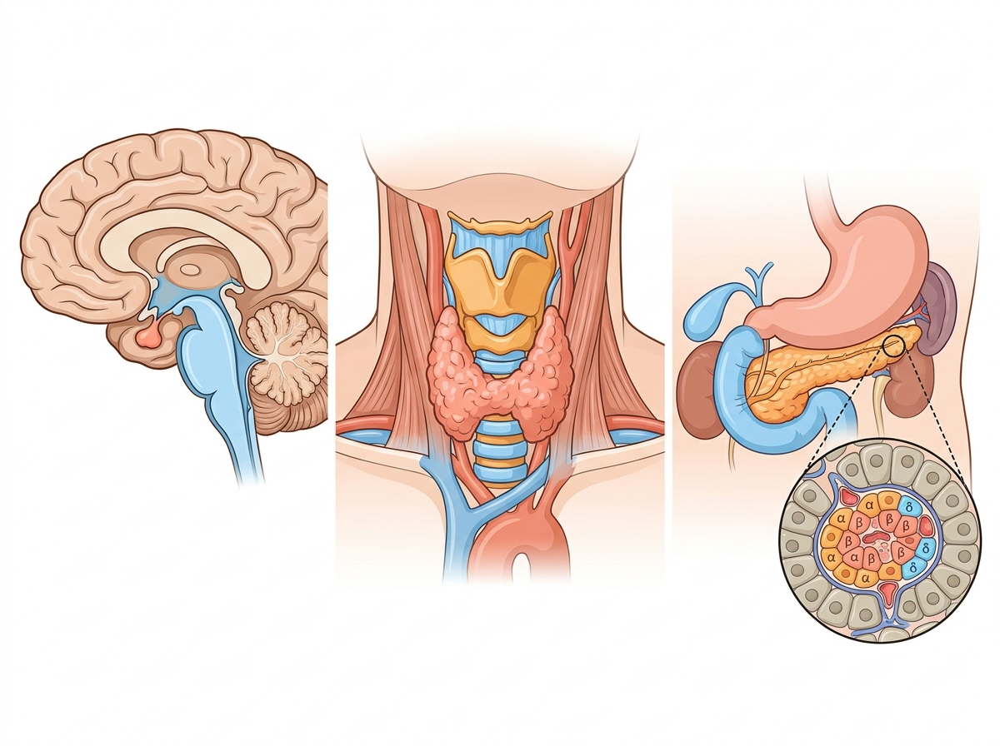
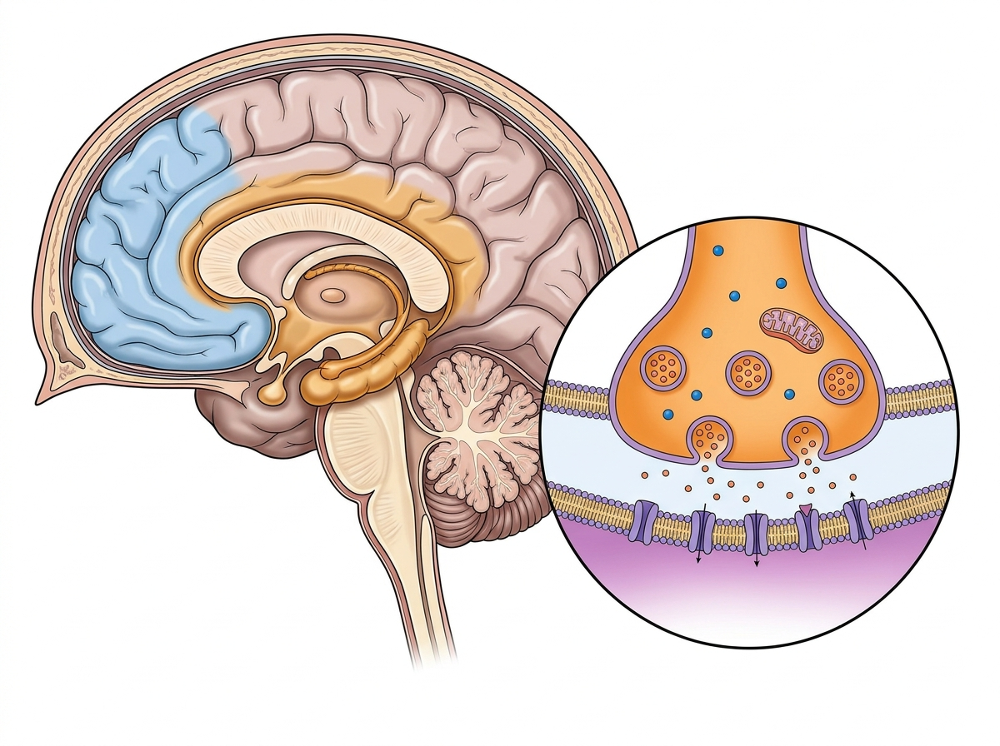

1
Mulai dari BASICS
Pahami perbedaan mendasar fungsi ICD-10 (pengodean diagnosis/penyakit) dan ICD-9-CM Volume 3 (pengodean tindakan/prosedur medis) serta alur 4 tahap verifikasi kode WHO.
Modul interaktif kodifikasi klinis berbasis alur standar WHO untuk Bab IV (E00–E90: Endokrin, Nutrisi & Metabolik) dan Bab V (F00–F99: Gangguan Mental & Perilaku), dilengkapi penelusuran tindakan ICD-9-CM, ilmu biomedis, farmakologi edukatif, dan evaluasi kasus.
Media pembelajaran akademik non-klinis · Acuan: WHO ICD-10 (2010) & ICD-9-CM Vol. 3
Buka langsung Coding Review, Medical Science & Anatomi, atau Latihan Kasus Bab IV & Bab V.
Ruang lingkup dua bab utama: Bab IV (E00–E90: Endokrin, Nutrisi & Metabolik) dan Bab V (F00–F99: Gangguan Mental & Perilaku) — dilengkapi 20 kasus telusur, diagram anatomi interaktif, farmakologi non-resep, dan 40 soal isian.
Ketua terisi tetap; baris anggota 2–4 dapat diedit langsung & tersimpan otomatis.
| No. | Nama Mahasiswa | NIM | Peran dalam Proyek |
|---|---|---|---|
| 1 | Athira Laha Afaf Yudia | 20250306001 |
Koordinator Kelompok & PJ Coding Review |
Panduan singkat memaksimalkan pembelajaran kodifikasi klinis Bab IV & Bab V.
Pahami perbedaan mendasar fungsi ICD-10 (pengodean diagnosis/penyakit) dan ICD-9-CM Volume 3 (pengodean tindakan/prosedur medis) serta alur 4 tahap verifikasi kode WHO.
Setiap bab memiliki 4 sub-tab konsisten: Pengantar Bab, Coding Review, Medical Science, dan Farmakologi. Pahami konteks klinis sebelum menghafal kode.
Pilih filter bab dan jenis kode (10 soal ICD-10 & 10 soal ICD-9-CM per bab), ketik kode pada kolom isian, lalu tekan tombol centang (✓) untuk melihat jawaban yang benar dan pembahasannya.
Seluruh skenario kasus dalam aplikasi bersifat fiktif akademik (bebas data pasien nyata). Pembahasan obat hanya bersifat edukatif, bukan anjuran resep atau dosis klinis.
| No. | Nama Lengkap Mahasiswa | NIM | Peran dalam Proyek Capstone |
|---|---|---|---|
| 1 | Athira Laha Afaf Yudia | 20250306001 |
Koordinator Kelompok & PJ Coding Review |
Mengikuti struktur modul WHO ICD-10 Training Tool dan Kerangka Acuan Kerja (KAK) Semester 3 D3 RMIK Universitas Esa Unggul.
Endocrine, Nutritional and Metabolic Diseases — Pengantar Bab, Coding Review Vol. 2 (10 Kasus + ICD-9-CM), Medical Science, & Farmakologi.
Mental and Behavioural Disorders — Pengantar Bab, Coding Review Vol. 2 (10 Kasus + ICD-9-CM), Medical Science, & Farmakologi.
| Mata Kuliah | Kontribusi dalam Aplikasi Pembelajaran |
|---|---|
| RKE313 Algoritma & Pemrograman | Struktur navigasi bertingkat, logika perpindahan sub-tab, filter soal interaktif, serta kalkulasi skor otomatis. |
| RKE326 Kodifikasi | Ketepatan alur penelusuran Lead Term → Indeks Alfabetis (Vol. 3) → Daftar Tabular (Vol. 1) pada ICD-10 dan penelusuran tindakan ICD-9-CM. |
| RKE325 Patofisiologi & Terminologi | Diagram anatomi/fisiologi/patofisiologi organ endokrin & sistem saraf pusat beserta bedah akar kata, prefiks, dan sufiks istilah medis. |
| RKE361 Farmakologi | Pemetaan edukatif golongan obat (insulin, levothyroxine, antipsikotik, antidepresan, dll.) terhadap mekanisme penyakit tanpa anjuran resep. |
| RKE352 Statistik Pelayanan Kesehatan | Integrasi konteks beban morbiditas penyakit kronis & gangguan mental serta akurasi data klaim INA-CBGs / SATUSEHAT. |
| RKE330 Organisasi & Manajemen | Pembagian peran tim, kontrol mutu materi, dan dokumentasi rujukan klasifikasi yang terstandar. |
Prinsip wajib sebelum menetapkan kode diagnosis (ICD-10) dan kode prosedur (ICD-9-CM).
Menentukan kata kunci utama dari pernyataan diagnosis atau tindakan klinis.
Analisis TerminologiMenelusuri lead term & modifier esensial pada ICD-10 Volume 3 (jangan berhenti di tahap ini).
Kandidat Kode AwalMemeriksa catatan bab, blok, Includes/Excludes, tanda baca (†/*), dan karakter ke-4/ke-5.
Verifikasi Aturan BabICD-10 (Diagnosis) & ICD-9-CM (Prosedur) ditetapkan lengkap disertai rasionalisasi.
Siap DisajikanE10.3, F53.0).E10.3† H36.0*).96.07, 94.39).Penyakit Endokrin, Nutrisi, dan Metabolik — Pemahaman Kaidah Kodifikasi, Biomedis, & Farmakologi
E00–E90.E10–E14) serta sistem pasangan Dagger (†) & Asterisk (*).O24.-) dan gangguan metabolik transien pada neonatus (P70–P74).Penyakit endokrin-metabolik kronis—terutama Diabetes Melitus beserta komplikasi mikrovaskular dan makrovaskular—menyumbang beban morbiditas rawat jalan/rawat inap tertinggi serta berkontribusi bermakna terhadap mortalitas (seperti koma ketoasidosis dan gagal ginjal/kardiovaskular) di rumah sakit Indonesia. Ketepatan penulisan karakter ke-4 serta pemisahan kode prosedur ICD-9-CM sangat menentukan validitas pelaporan nasional SATUSEHAT Kemenkes RI (ICD-10 versi 2010) dan akurasi pengelompokan pembiayaan INA-CBGs.

Mengatur keseimbangan cairan melalui hormon ADH. Kekurangan ADH memicu Diabetes Insipidus (E23.2).
Tiroid mensintesis T3/T4 (E00–E06), sedangkan sel beta Pulau Langerhans pankreas memproduksi insulin pengatur glukosa (E10–E14).
| Rentang Blok | Deskripsi Kelompok Kondisi | Contoh Kondisi Klinis |
|---|---|---|
E00–E07 | Disorders of thyroid gland | Sindrom defisiensi yodium kongenital (E00.0, E00.1), Tiroiditis akut (E06.0) |
E10–E14 | Diabetes mellitus | DM Tipe 1 dengan retinopati (E10.3† H36.0*), DM dengan gangren (E14.5) |
E15–E16 | Other disorders of glucose regulation and pancreatic internal secretion | Koma hipoglikemik non-diabetik (E15) |
E20–E35 | Disorders of other endocrine glands | Diabetes insipidus (E23.2), Sindrom Cushing (E24.-) |
E40–E46 | Malnutrition | Kwashiorkor (E40), Marasmus (E41), Marasmic kwashiorkor (E42) |
E50–E64 | Other nutritional deficiencies | Defisiensi vitamin A (E50.-), Defisiensi vitamin D (E55.-) |
E65–E68 | Obesity and other hyperalimentation | Obesitas akibat kelebihan kalori (E66.0) |
E70–E90 | Metabolic disorders | Ketidakseimbangan elektrolit (E87.8), Gangguan metabolisme lipid (E78.-) |
E10–E14 sesuai komplikasi spesifik.H36.0*, G63.2*, I79.2*).E14.- hanya jika tipe Diabetes Melitus tidak dirinci pada rekam medis.Pilih kata benda kondisi patologis utama pada ICD-10 Volume 3 (Section I) seperti Diabetes, Thyroiditis, Syndrome, Kwashiorkor, atau Imbalance, lalu ikuti modifier esensial tipe dan komplikasi sebelum menuju Volume 1.
Periksa catatan Includes (mis. abses tiroid pada E06.0), Excludes (DM kehamilan → O24.-; perinatal → P70–P74), serta catatan tambahan kode agen infeksi (B95–B97) dan derajat IQ (F70–F73).
O24.-), bukan E10–E14.P70–P74).R00–R99).† N08.3*).† H36.0* retinopati, † H28.0* katarak diabetik).† G63.2* polineuropati).† I79.2*) · .7 komplikasi multipel.Terpisah dari Kode Diagnosis ICD-10
Fungsi Kode Prosedur: Mendokumentasikan tindakan diagnostik maupun terapi medis/bedah menggunakan kode numerik ICD-9-CM Volume 3 dan tidak pernah menggantikan kode diagnosis ICD-10.
Contoh Tindakan Relevan & Penelusuran: Pada malnutrisi berat (E42) → tindakan pemasangan selang makan ditelusuri melalui Lead Term Insertion → tube → nasogastric → verifikasi Daftar Tabular 96.07. Untuk pemantauan retinopati diabetik (E10.3† H36.0*) → Tomography → optical coherence → 95.16.
Alasan Pemilihan Kode: Rute hidung–lambung terkonfirmasi pada 96.07 (terpisah dari infus nutrisi enteral 96.6), sedangkan pemindaian tomografi koherensi optik retina tervalidasi pada 95.16.
Lobus posterior melepaskan hormon antidiuretik (ADH) untuk menjaga reabsorpsi air ginjal. Defisit ADH memicu Diabetes Insipidus (E23.2).
Menyerap yodium untuk sintesis hormon T3/T4. Defisiensi kongenital memicu sindrom E00.0 / E00.1 dan infeksi akut memicu tiroiditis E06.0.
Sel beta mensekresi hormon insulin. Kerusakan autoimun atau resistensi reseptor memicu Diabetes Melitus (E10–E14) dan komplikasi mikrovaskular.
Organ kunci Bab IV meliputi kelenjar tiroid (di anterior leher, penghasil T3/T4), pankreas endokrin (Pulau Langerhans sel beta penghasil insulin), serta hipofisis posterior pengatur hormon ADH.
Insulin membuka kanal GLUT-4 agar glukosa masuk ke sel otot dan jaringan adiposa. Hormon tiroid mengatur laju metabolisme basal serta perkembangan otak janin, sementara ADH menjaga reabsorpsi air di ginjal.
Pada DM Tipe 1 (E10) defisiensi insulin memicu hiperglikemia dan kerusakan kapiler retina/saraf. Pada Defisiensi Yodium Kongenital (E00.0/E00.1) kurangnya T4 mengganggu maturasi saraf dan memicu retardasi mental, sedangkan defisit ADH memicu Diabetes Insipidus (E23.2).
E10.3† H36.0*
Definisi Ringkas: Gangguan metabolik kronis akibat destruksi autoimun sel beta pankreas sehingga menyebabkan hiperglikemia persisten yang merusak mikrovaskular retina.
Keterkaitan Bab ICD: Etiologi DM Tipe 1 diklasifikasikan di Bab IV (E10.3†), sedangkan manifestasi pada retina dikodekan berpasangan ke Bab VII (H36.0*).
E00.0 / E00.1
Definisi Ringkas: Hipotiroidisme bawaan akibat kekurangan yodium berat pada fase perkembangan janin sehingga mengganggu metabolisme sel dan maturasi otak.
Keterkaitan Bab ICD: Masuk blok gangguan tiroid Bab IV (E00–E07), dengan kode tambahan derajat retardasi mental dari Bab V (F70–F73).
E42
Definisi Ringkas: Malnutrisi energi–protein berat yang menggabungkan pengecilan massa otot/lemak ekstrem (marasmus) dan edema akibat hipoalbuminemia (kwashiorkor).
Keterkaitan Bab ICD: Blok Malnutrition (E40–E46) pada Bab IV menyediakan kode kombinasi tunggal E42 agar tidak dikode ganda terpisah.
E23.2
Definisi Ringkas: Ketidakmampuan ginjal memekatkan urin akibat defisiensi sekresi hormon antidiuretik (ADH/vasopresin) dari hipofisis posterior sehingga terjadi poliuria dan polidipsia.
Keterkaitan Bab ICD: Diklasifikasikan pada blok gangguan kelenjar endokrin lain Bab IV (E20–E35), berbeda dari Diabetes Melitus (E10–E14).
| Istilah Medis | Prefix | Root / Combining Form | Suffix | Organ / Struktur Terkait (Diagram) | Makna Klinis & Kaitannya dengan Bab IV |
|---|---|---|---|---|---|
| Hyperglycaemia | hyper- | glyc/o | -aemia | Pankreas (Sel Beta Pulau Langerhans) | Kadar glukosa darah di atas normal (E10–E14). |
| Retinopathy | — | retin/o | -pathy | Retina Bola Mata (Komplikasi Mikrovaskular) | Kerusakan kapiler retina akibat DM (H36.0*). |
| Polyneuropathy | poly- | neur/o | -pathy | Saraf Perifer Ekstremitas | Gangguan beberapa saraf perifer sekaligus (G63.2*). |
| Thyroiditis | — | thyroid/o | -itis | Kelenjar Tiroid (Lobus Kanan & Kiri) | Peradangan/abses kelenjar tiroid (E06.0). |
| Myxoedema | — | myx/o | -edema | Kelenjar Tiroid & Hipofisis (T3/T4) | Pembengkakan jaringan akibat hipotiroid berat (E00.1). |
E10.-), Retinopati (E10.3† H36.0*), & Polineuropati (E10.4† G63.2*).E11.-).E00.0, E00.1).E23.2).E87.8) & Marasmus-Kwashiorkor (E42).99.18 & 96.6).Gangguan Mental dan Perilaku — Kaidah Kodifikasi Psikiatri, Neurobiologi, & Psikofarmaka Edukatif
F00–F99 pada ICD-10 versi 2010.R44.1).F53.0), ketergantungan tembakau (F17.2), fobia spesifik (F40.2), derajat retardasi mental (F70–F73), dan pasangan Dagger/Asterisk demensia HIV (B22.0† F02.4*).94.39, 94.33, 94.27, 94.01, 94.49).Gangguan kesehatan jiwa berdampak besar terhadap beban morbiditas jangka panjang (Years Lived with Disability / YLD) serta memengaruhi mortalitas tidak langsung akibat komplikasi penyerta dan risiko penyalahgunaan zat di layanan primer maupun rumah sakit jiwa. Dokumentasi yang akurat atas diagnosis Bab V serta pemisahan tindakan non-operatif kategori 93–94 ICD-9-CM menjamin validitas surveilans kesehatan jiwa nasional pada SATUSEHAT Kemenkes RI (ICD-10 versi 2010) dan ketepatan klaim INA-CBGs.

Korteks prefrontal mengatur penilaian realitas dan kognisi (F20, F25, F00–F02), sedangkan amigdala–hipokampus mengatur emosi, fobia (F40.2), dan mood (F31.8, F53.0).
Keseimbangan sinyal kimia dopamin, serotonin, norepinefrin, dan GABA di celah sinaps menjadi dasar patofisiologi Bab V serta mekanisme psikofarmaka.
| Rentang Blok | Deskripsi Kelompok Gangguan | Contoh Kondisi Klinis |
|---|---|---|
F00–F09 | Organic, including symptomatic, mental disorders | Demensia pada penyakit HIV (B22.0† F02.4*) |
F10–F19 | Mental and behavioural disorders due to psychoactive substance use | Ketergantungan tembakau/rokok (F17.2) disertai PPOK (J44.9) |
F20–F29 | Schizophrenia, schizotypal and delusional disorders | Skizofrenia paranoid (F20.0), Skizoafektif tipe manik (F25.0) |
F30–F39 | Mood [affective] disorders | Bipolar tipe II (F31.8), Episode depresif (F32.-) |
F40–F48 | Neurotic, stress-related and somatoform disorders | Fobia spesifik ular (F40.2) |
F50–F59 | Behavioural syndromes associated with physiological disturbances | Depresi pascamelahirkan ringan (F53.0) |
F60–F69 | Disorders of adult personality and behaviour | Gangguan kepribadian emosional tak stabil (F60.3) |
F70–F79 | Mental retardation | Retardasi mental berat IQ 20–34 (F72) |
F80–F89 | Disorders of psychological development | Speech delay (F80.9), Gangguan membaca & mengeja (F81.0, F81.1) |
F90–F99 | Behavioural/emotional disorders with onset in childhood & unspecified | Gangguan hiperkinetik/ADHD (F90.-) |
R44.1)..0–.9 pada gangguan zat psikoaktif (F10–F19) sesuai pola penggunaan (F17.2 ketergantungan).B22.0† F02.4*.Telusuri istilah klinis pada ICD-10 Volume 3 (Section I) memakai kata kunci spesifik seperti Depression (puerperal), Phobia (animal), Dependence (tobacco), Retardation (mental), Delay (speech), atau Dementia (in HIV).
Verifikasi catatan Includes pada F31.8 (Bipolar II disorder) & F40.2 (Animal phobias), Excludes batas waktu 6 minggu nifas pada F53.-, serta skala skor IQ baku pada blok F70–F73.
R44.1).F31.8..0 intoksikasi, .1 penggunaan merugikan, .2 sindrom ketergantungan (mis. F17.2).F70 (IQ 50–69), F71 (IQ 35–49), F72 (IQ 20–34), F73 (IQ <20).B22.0† F02.4*.Terpisah dari Kode Diagnosis ICD-10
Fungsi Kode Prosedur: Mendokumentasikan asesmen psikometri, wawancara psikiatri diagnostik, psikoterapi, maupun terapi somatik/rehabilitatif tanpa menggantikan kode diagnosis psikiatri Bab V.
Contoh Tindakan Relevan & Penelusuran: Untuk pasien depresi pascapersalinan (F53.0) yang menjalani sesi konseling individual → telusuri Lead Term Psychotherapy → individual NEC → verifikasi Daftar Tabular 94.39. Untuk fobia spesifik ular (F40.2) → Therapy → behavior → 94.33.
Alasan Pemilihan Kode: Kategori 94.39 secara spesifik membedakan psikoterapi verbal individual dari terapi perilaku desensitisasi (94.33), terapi keluarga (94.42), atau konseling berhenti merokok (94.49).
Pusat fungsi eksekutif, kontrol impuls, dan penilaian realitas. Gangguan jalur dopaminergik berperan pada skizofrenia/skizoafektif (F20 / F25.0).
Mengatur suasana perasaan dan respons takut. Hiperaktivasi amigdala memicu fobia spesifik (F40.2), sedangkan disregulasi limbik mendasari F53.0 & F31.8.
Titik pelepasan dopamin, serotonin (5-HT), norepinefrin, dan GABA menuju reseptor postsinaps yang menjadi target kerja edukatif psikofarmaka.
Perilaku, emosi, dan kognisi diatur oleh korteks prefrontal (penalaran & persepsi realitas), sistem limbik (amigdala & hipokampus sebagai pusat emosi dan respons takut), serta jaras dopaminergik mesolimbik.
Neurotransmiter serotonin (5-HT) dan norepinefrin menjaga stabilitas mood, dopamin mengatur motivasi serta pemrosesan realitas, dan GABA menghambat eksitasi kecemasan berlebih.
Hiperaktivitas dopamin mesolimbik memicu gejala psikotik pada Skizofrenia/Skizoafektif (F20/F25.0). Penurunan serotonin pascapersalinan berkaitan dengan Depresi Pascamelahirkan (F53.0), dan hiperaktivasi amigdala memicu Fobia Spesifik (F40.2).
F53.0
Definisi Ringkas: Gangguan suasana perasaan depresif dalam masa nifas (<6 minggu pascapersalinan) terkait fluktuasi hormonal pascaplasenta dan penurunan transmisi serotonin.
Keterkaitan Bab ICD: Diklasifikasikan di blok F50–F59 (F53.0 untuk bentuk ringan/sedang), terpisah dari episode depresif umum (F32.-) bila onsetnya spesifik masa nifas.
F20 / F25.0
Definisi Ringkas: Gangguan psikotik dengan distorsi pikiran dan persepsi akibat hiperaktivitas dopamin mesolimbik; tipe skizoafektif menampilkan gejala skizofrenia sekaligus episode manik.
Keterkaitan Bab ICD: Berada pada blok F20–F29 Bab V dengan pemisahan subtipe kategori 4-karakter seperti F25.0.
F40.2
Definisi Ringkas: Ketakutan irasional intens terhadap objek/situasi tertentu (mis. ular) akibat hiperaktivasi amigdala dan respons otonom simpatis.
Keterkaitan Bab ICD: Masuk blok gangguan neurotik dan ansietas fobik (F40–F48) pada kategori F40.2.
F17.2 + J44.9
Definisi Ringkas: Adiksi nikotin pada reseptor asetilkolin nikotinik otak yang mempertahankan perilaku merokok hingga memicu inflamasi kronis jalan napas.
Keterkaitan Bab ICD: Aspek adiksi perilaku dikode ke Bab V (F17.2), sedangkan kelainan struktural paru dikode terpisah ke Bab X (J44.9).
| Istilah Medis | Prefix | Root / Combining Form | Suffix | Organ / Struktur Terkait (Diagram) | Makna Klinis & Kaitannya dengan Bab V |
|---|---|---|---|---|---|
| Schizophrenia | — | schiz/o + phren/o | -ia | Korteks Prefrontal & Jaras Dopamin | Disorganisasi proses pikir, persepsi, dan afek (F20–F25). |
| Claustrophobia | — | claustr/o + phob/o | -ia | Sistem Limbik (Amigdala) | Ketakutan irasional pada ruang tertutup/objek spesifik (F40.2). |
| Psychotherapy | — | psych/o + therap/o | -y | Korteks Prefrontal & Sistem Limbik | Terapi psikologis; dikode di ICD-9-CM (94.3-, 94.4-). |
| Postpartum | post- | part/o | -um | Sistem Limbik & Sinaps Serotonin | Periode pascapersalinan yang menjadi acuan kategori F53.-. |
| Anhedonia | an- | hedon/o | -ia | Celah Sinaps (Dopamin–Serotonin) | Hilangnya minat/rasa senang (gejala depresi F32/F53.0). |
F20.-) dan Gangguan Skizoafektif Tipe Manik (F25.0).D2 di jalur mesolimbik (dan 5-HT2A pada golongan atipikal) untuk menormalkan transmisi sinyal yang berlebihan.F53.0), Episode Depresif (F32.-), dan Fobia (F40.-).F31.8) dan Skizoafektif Tipe Manik (F25.0).F40.-).GABA-A dan meningkatkan pembukaan kanal ion klorida (Cl-).Pengelompokan obat menurut diagnosis: nama generik, contoh nama dagang, golongan farmakologis, bentuk sediaan & rute, serta mekanisme kerja non-resep.
E10.-), Retinopati (E10.3† H36.0*).E11.-).E00.0, E00.1).E23.2).E87.8) & Marasmus-Kwashiorkor (E42).99.18 & 96.6).F20.-) & Skizoafektif Tipe Manik (F25.0).F53.0) & Fobia (F40.-).F31.8) & Skizoafektif Tipe Manik (F25.0).F40.-).Seluruh kode diagnosis, prosedur, materi biomedis, dan farmakologi mengacu pada sumber resmi berikut.